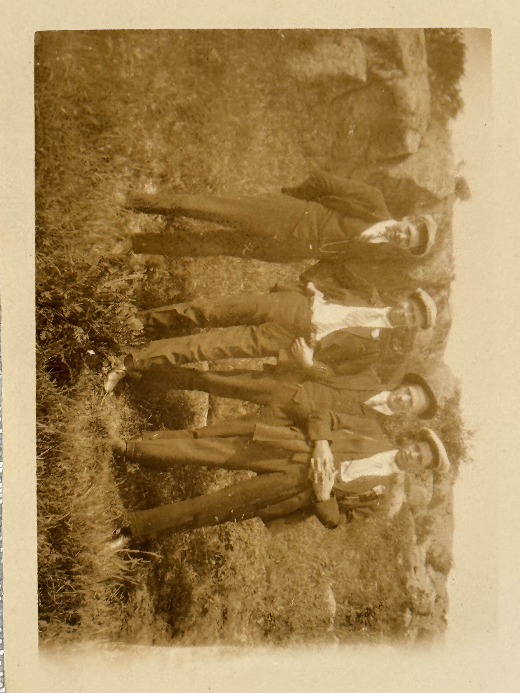
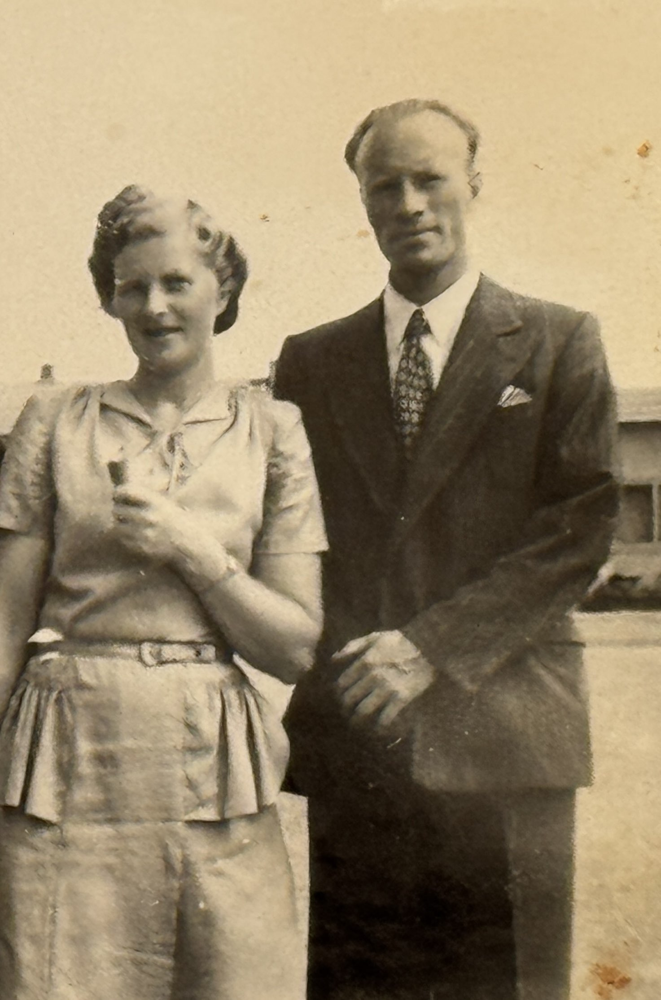
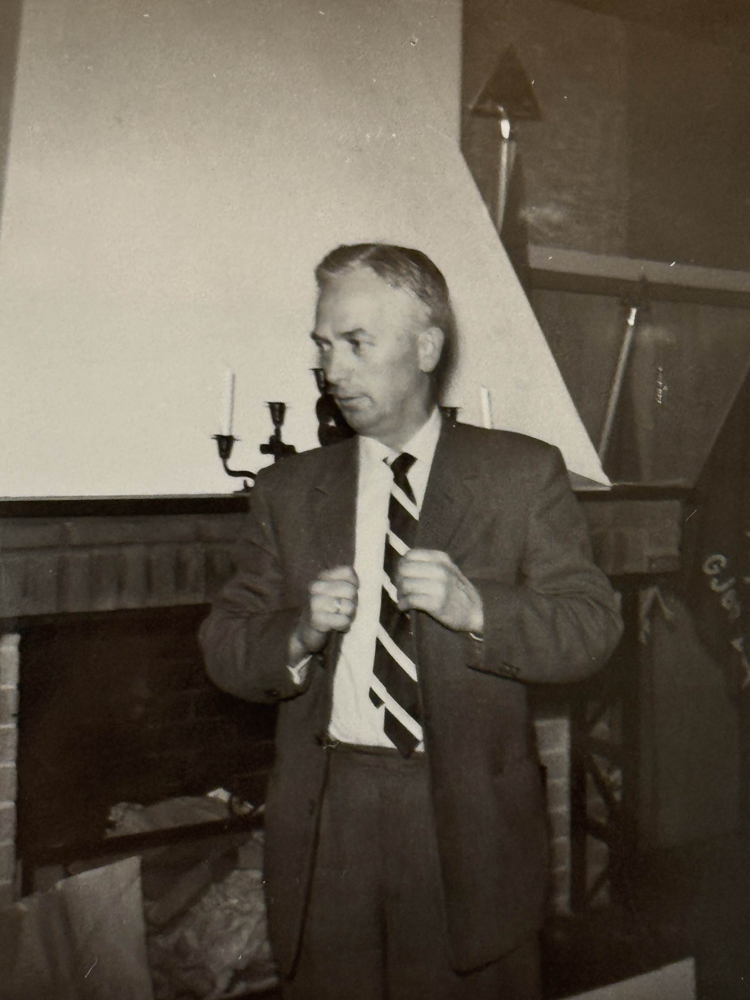
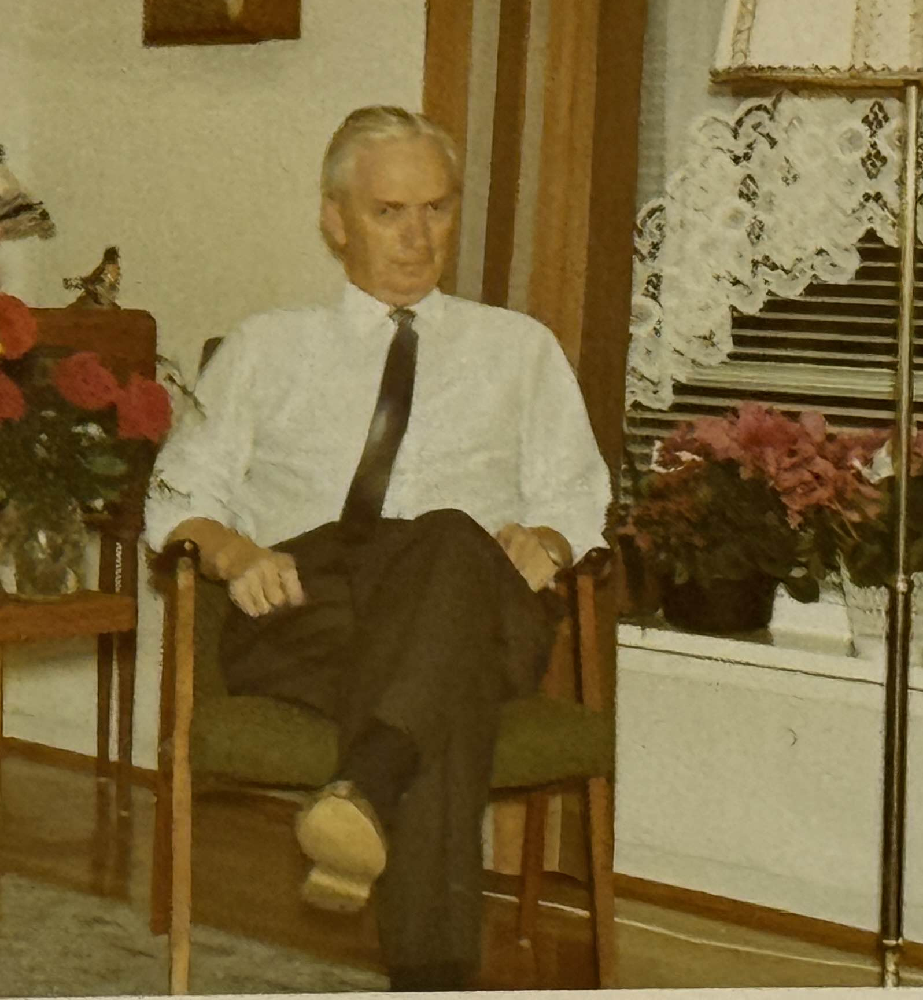

Forord
Det er lett å glemme at de som kjempet mot tyskerne i motstandsbevegelsen hadde et liv både før og etter krigen. En av disse er Carl Morris Olsen, født i Fredrikstad i 1910, måtte rømme landet i 1943. 33 år gammel dro han fra kone og barn for å redde sitt eget liv. Hans kriminelle gjerning? (Å sende de som trengte det mest, ut av landet.) (Å redde andres liv)
De første årene
Carl Morris Olsen ble født 2. oktober 1910. Vokst opp på Grensen i Fredrikstad med sine fire søsken. Far var snekker, og mor var hjemmeværende. Barndommen var svært preget av mangel på penger, Morris gjemte seg langs veggen på skolen for å skjule hullete og slitte klær. I denne familien var de ikke bortskjemte på mye annet enn kjærlighet. Søsknene hadde tette bånd, de sto sammen i tykt og tynt. Med tre brødre og en søster var Morris nest yngst i denne nære søskenflokken. Og nettopp disse båndene skulle bli viktig for Morris livet ut.
Hvem var Morris?
Med en sans for rettferdighet valgte Morris å bli politibetjent. I motsetning til mange andre på denne tiden, valgte Morris å ta politiskolen. Etter hans mening var dette en viktig jobb, som krevde en passende utdanning. Den måtte gjøres riktig. Han hadde et ønske om å gjøre verden bedre, om å hjelpe andre. Morris forelsket seg i nabojenta Signe, og paret giftet seg 17 oktober 1939.

Hvem var Morris? del 2
Begge familiene var involvert i kirken, og Morris var selv med i sangkor, ungdomsforeninger og jobbet som sekretær i menighetsrådet. Ved siden av jobben og kirkeengasjementet var Morris en svært ivrig sportsmann. Han trivdes med å gå på ski, turer og tok årlig Norges idrettsforbunds idrettsmerke. Morris trivdes med livet han levde, som politibetjent, engasjert i kirken, sportsmann, ektemann og etter hvert, far. For 19. oktober 1943 fikk paret en liten gutt. Gleden var stor, men kortvarig, da det ikke tok lang tid før den lille familien ble revet fra hverandre.
Krigsåra
I 1944 bodde den lille familien i Morris sitt barndomshjem. Han jobbet på Gamlebyen politistasjon i Fredrikstad, og
hadde et stort sosialt nettverk. Likevel var ikke hverdagen det den en gang var. Med Norge under tysk okkupasjon var
dette en tøff tid for mange.
For å hjelpe venner, bekjente og andre i nød begynte Morris å lage falske reisetillatelser, med disse kunne man komme
seg trygt ut av landet. Det er uvisst når Morris begynte med dette og hvor mange han hjalp med å flykte, men det var
godt kjent på denne tiden at Morris var slepphendt med disse verdifulle papirene. Med sin overordnetes viten, dog ikke
direkte aksept, var det ikke bare Morris på dette politikammeret som var litt ekstra snill. Men våren 1944 hadde
tyskerne fått ferten av de ulovlige reisetillatelsene, flere på kammeret måtte rømme landet, deriblant Morris.
Falske grensebevis
For å få lov til å reise nær grensen trengte man egne papirer – grensebevis. Uten disse kunne man bli stoppet, avhørt eller arrestert.
Hvorfor var dette så farlig?
- Å forfalske dokumenter var en alvorlig forbrytelse under okkupasjonen.
- Hvis tyskerne oppdaget det, risikerte både Morris og de han hjalp fengsel eller verre.
Flukten til Sverige
Morris forteller i et intervju med Fredrikstad Blad at han og brødrene måtte flykte samme dag, uten å reise hjemom til familien, uten reisetillatelser, og uten en klar plan
«Jeg skrev ut reisetillatelser til noen hver, men fikk ikke laget noen til meg selv» [Intervju – navn, dato]
De fire brødrene syklet fra Fredrikstad opp til Valaskjold i Sarpsborg, der de kom seg på et godstog som kjørte helt til endestasjonen Kornsjø stasjon. Der ble togets konduktør stoppet av tyskerne. Mens brødrene satt gjemt i en godsvogn, kunne de høre tyskerne og konduktøren snakke.
Fluktruten
Flukten steg for steg
- Fredrikstad – brødrene drar hjemmefra og legger planen.
- Valaskjold – de sykler nordover og holder en lav profil.
- Godstoget – hopper på et godstog som går mot Kornsjø.
- Kornsjø stasjon – tyskerne stopper konduktøren, brødrene gjemmer seg i godsvognen.
- Svensk kuvogn – de sniker seg over i en svensk kuvogn «rett foran nesen på okkupantene».
- Inn i Sverige – toget ruller over grensen, og brødrene er endelig i sikkerhet.
Flukten til Sverige del 2
«Dere må gjerne titte, men jeg kan love at her er det ingen blindpassasjerer» sier konduktøren til slutt. Brødrene Olsen holdt pusten i frykt, frykt for hva som ville hende med dem dersom tyskerne fant dem. Men de var heldige, okkupantene trodde på konduktøren.
Nå måtte de bare finne en vei over grensen. Omsider kom de seg av godstoget og inn i en svensk kuvogn, «rett foran nesen på okkupantene», og da denne ble flyttet over grensen var endelig brødrene Olsen trygge.I Sverige måtte Morris starte på nytt, han tok alle jobber han kunne for å forsørge seg selv, men også for å sende penger hjem til kona Signe og sønnen Ivar. Han fikk brukt sine kunnskaper som tidligere journalfører, og fikk jobb i administrasjonen på Färna bruk.
Tidslinje
- 2 oktober 1910 Morris blir født
- 1 april 1929 Startet i politiet som journalfører og fullførte politiskolen
- 17 oktober 1939 Morris og Signe gifter seg
- 1942 - 1944 Skriver ut falske reisebevis
- 30 september 1943 Skriver ut falskt resisebevis til bestevennen Scott
- 19 oktober 1943 Sønnen Ivar blir født
- Våren 1944 Morris må rømme landet
- 1946 Morris kommer hjem til Norge og får tilbake jobben i politiet
- 1952 Morris tar idrettsmerke
- 1957 Tar imot kongen på åpningen av Fredrikstadbroen
- 1970 Morris pensjonerer seg
- 16 desember 1982 Morris går bort
Etter krigen
Da Morris returnerer til Norge finner han ut at han i 1944 hadde fått sparken fra jobben i politiet da tyskerne tok over politikammeret. Han hadde rukket å rømme før beskjeden nådde han. Likevel gikk livet fort tilbake som det var før. Han fortsatte jobben på politikammeret i Gamlebyen i Fredrikstad, paret fikk en sønn til, og tok i en alder av 42 år idrettsmerkestatuetten. Etter 40 år i politiet valgte Morris å pensjonere seg, men det viste seg at pensjonisttilværelsen ikke var noe han trivdes med. Han jobbet derfor som avisgutt og ryddet opp på lokale byggeplasser under konstruksjon.
Avslutning
Morris levde et godt liv, og da han omsider gikk bort rett før jul 1982 var det en stor sorg for lokalsamfunnet. Mannen som en gang i tiden hadde hjulpet alle i nød, enten gjennom politiarbeid, reisetillatelser, eller kun hans gode hjerte, ville bli savnet stort. Morris og hans gode gjerninger lever videre i minnene til alle de som elsket han, og alle de han hjalp redde under krigen.
